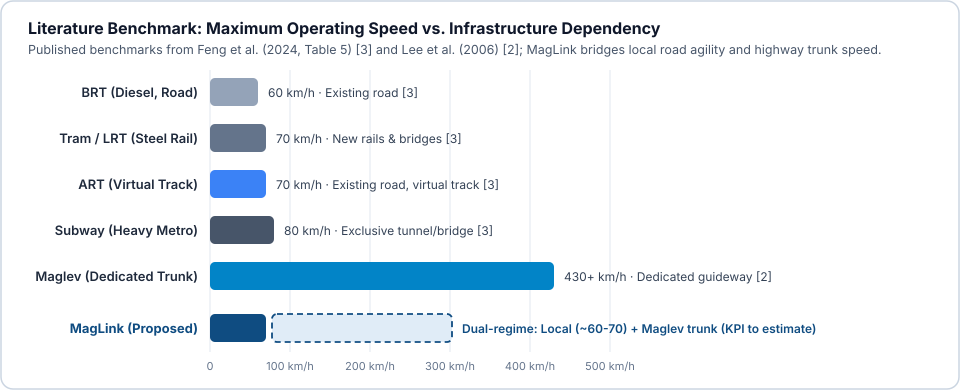

1. Literature Works in Silos
Current studies optimize Maglev physics [2], virtual-track urban trams [3], or autonomous DRT routing [4] separately—no architecture couples road-level capillarity with contactless highway levitation in one vehicle.
MagLink · Research Foundation (Ag3)
Critical synthesis of the four core literature pillars supporting MagLink—explicitly mapping each paper's main work, key conclusions, and unresolved limitations to our consortium's R&D scope.
Every reference below grounds one subsystem of MagLink—and exposes a specific limitation that no single existing system solves alone.
| Reference | Main Work | Main Conclusions | Main Limitations & Open Gap |
|---|---|---|---|
|
Chen et al. (2021) Transp. Res. Part D [1] |
Ex-post Life-Cycle Assessment (LCA) of the Beijing–Shanghai High-Speed Rail (HSR), modeling mode substitution and induced traffic across construction, rolling-stock manufacturing, and operation. | Operational CO2 turns net-negative once enough road/air traffic shifts to rail; however, building new HSR infrastructure creates a huge upfront CO2 burden barely offset by avoided road/air expansion. | Single-corridor case study; demonstrates that greenfield rail construction is carbon- and capital-intensive, motivating high-speed systems that reuse existing highway corridors. |
|
Lee, Kim & Lee (2006) IEEE Trans. Magn. [2] |
Reviews Electromagnetic Suspension (EMS) vs. Electrodynamic Suspension (EDS), linear induction/synchronous propulsion (LIM/LSM), guidance, and global Maglev deployments. | EMS + LIM lowers civil cost for low/medium-speed urban lines; EDS + LSM is preferred for ultra-high-speed reliability; HTS and permanent magnets improve efficiency. | Pre-modern autonomy (2006); confined to closed, dedicated guideways with zero road/last-mile interoperability; flags remaining system-level cost and adoption barriers. |
|
Feng et al. (2024) Green Energy & Intell. Transp. [3] |
Designs the Autonomous-Rail Rapid Transit (ART) rubber-tire tram architecture using virtual painted tracks and benchmarks the Yibin T1 line against subway, tram, and BRT. | Achieves rail-like multi-axle guidance and capacity on existing urban roads with minimal civil works (98.8% schedule on-time rate; 26.8 km/h avg vs. 13 km/h bus). | Operating speed capped at 70 km/h (unsuitable for fast regional/intercity trunk segments); relies on road markings + vision/GPS/IMU; authors highlight "long-tail" autonomous driving edge cases and virtual platooning as open work. |
|
Fadlelseed et al. (2025) IEEE Access [4] |
System-of-Systems (SoS) review of Demand Responsive Transport (DRT) with Connected & Automated Mobility (CAM) buses across routing algorithms, infrastructure, and lifecycle ROI. | Automated DRT reaches ROI break-even around Year 5 on structured corridors and cuts CO2/NOx by ~40–60% vs. conventional buses; adaptive peak/off-peak models optimize fleet efficiency. | Remains a low/medium-speed road-only service with fluctuating-demand investment risk; authors flag V2X cybersecurity/spoofing, digital-twin V&V, and multimodal rail integration as unresolved challenges. |
|
Partner & Transition Literature Consortium To-Do |
Pending integration: Predictive active/adaptive controlled suspension papers (collaborating group) and dual-mode wheel-to-guideway mechanical handoff studies. | To synthesize: Road-preview damping bandwidth, active ride-height leveling, and magnetic airgap capture tolerances. | Target gap: Quantifying mass penalty, alignment precision, and fail-safe mechanical latching during mode switching. |
Synthesized from Feng et al. (2024, Table 5) [3], Lee et al. (2006) [2], and Chen et al. (2021) [1], showing why MagLink targets the gap between urban LRT/ART and dedicated rail.


Ag3 Poster).
| System | Right-of-Way / Infrastructure | Max Speed | Door-to-Door Flexibility | Primary Bottleneck |
|---|---|---|---|---|
| Conventional BRT / Bus | Existing roads (dedicated or mixed lanes) | ~60 km/h [3] | High (flexible road routing) | Low speed, rolling/stop losses, congestion |
| Tram / LRT (e.g., Coimbra-type) | Newly laid rails & reconstructed bridges/roads [3] | ~70 km/h [3] | Low (fixed steel track) | High civil CAPEX, long build time, rigid route |
| ART Virtual-Track Tram | Existing urban roads + painted virtual tracks [3] | 70 km/h [3] | Medium (road-capable, multi-axle) | Urban speed limit; not viable for fast highway trunks |
| Dedicated HSR / Maglev | Exclusive bridges, tunnels, or Maglev guideway [2, 3] | 300–500+ km/h [2] | Very Low (hub-to-hub only) | Massive embodied CO2 & construction cost [1] |
| MagLink (Proposed) | Existing local roads + shared open highway Maglev lane | Dual-regime (Local + High-speed trunk) | High (local wheels + V2I skip-stop DRT) | Wheel ↔ Maglev transition & adaptive suspension |
Current studies optimize Maglev physics [2], virtual-track urban trams [3], or autonomous DRT routing [4] separately—no architecture couples road-level capillarity with contactless highway levitation in one vehicle.
Combining our consortium's adaptive controlled suspension with magnetic bogies turns a conceptual bimodal sketch into a concrete mechanical R&D problem: controlling ride height, pitch, mass budget, and fail-safe mode handoff.
Using parameters from [1–4], our next milestone is a literature-grounded Python corridor model estimating travel time, energy per passenger-km, and lifecycle CO2 against LRT/tram and conventional bus baselines.
Ag2)Electromagnetism, EMS/EDS guideway compatibility, vibration & acceleration control.
Landing/retraction mechanisms, adaptive suspension leveling, electric propulsion.
Open Maglev lane retrofits on highways, transition ramps, and smart-stop terminals.
Vision + LiDAR perception, trajectory planning, real-time V2V/V2I decision-making.
Contactless power transfer, energy management, and high-power storage buffers.
Multibody vehicle dynamics, demand simulation, and corridor LCA benchmarking.